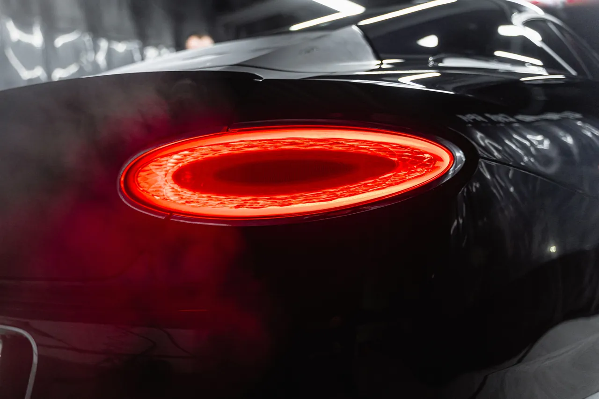
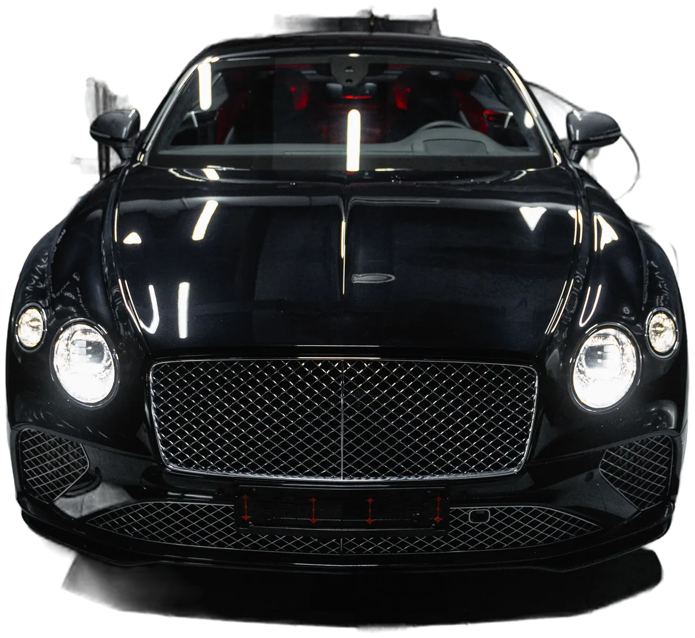

Bay time · about 2 h
Signature wash
Snow foam pre-wash, two-bucket hand wash, wheels and arches, filtered-air dry, glass and cabin wipe-down.
Detailing studio · Bay 01

One car. One bay. One session, told in real photographs.
The car on the bay
The process


The car rolls in and we read every panel under the bay lights before anything touches the paint.
Up close, water spots and road film sit on the glass and in every seam. Black paint shows every mark.
Foam dwells over the grille, lights and shut lines and loosens the grit before a mitt goes near it.
Panel by panel, top to bottom, with a soft sponge that is rinsed after every pass.
Soft brushes clear foam from the seams, badges and mesh that a mitt cannot reach.
Same car, same bay. Clear lenses, deep black paint, and the lights doing the rest.
Up close


Services
Bay time · about 2 h
Snow foam pre-wash, two-bucket hand wash, wheels and arches, filtered-air dry, glass and cabin wipe-down.
Bay time · 1 day
Iron and tar removal, clay, paint-depth readings, then machine polishing to take out swirls and haze.

Bay time · 2 days
Correction, then a ceramic coating cured under the bay lights, with a maintenance wash plan to keep it working.

Bay 01 · Booking
Find the bay